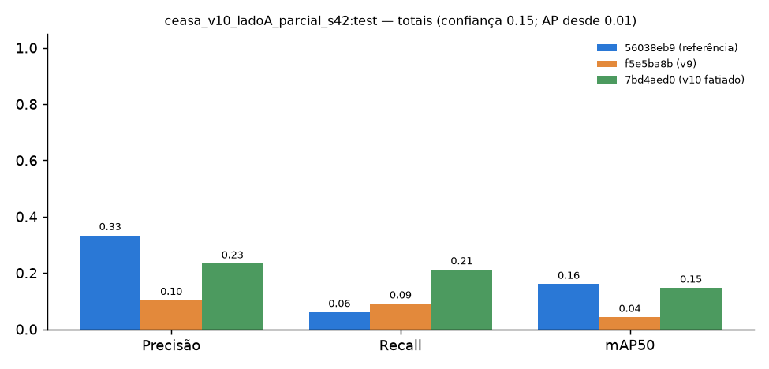
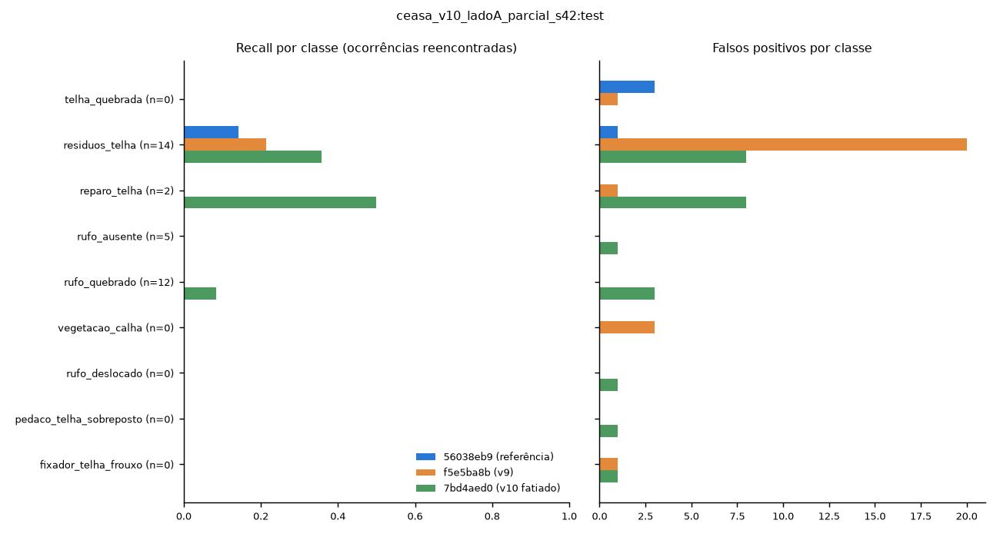
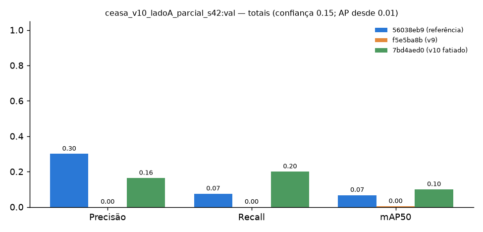
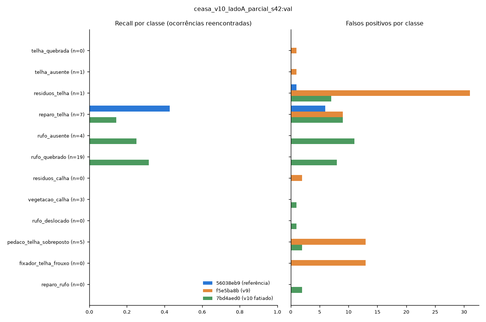
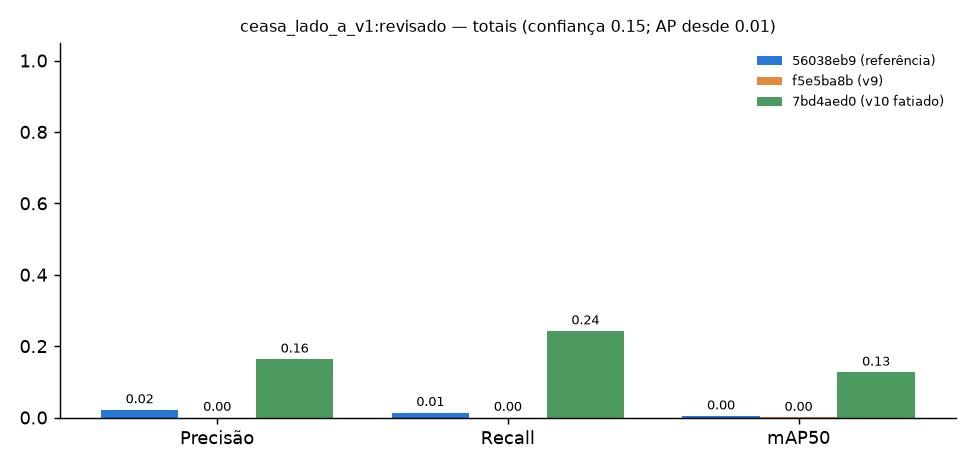
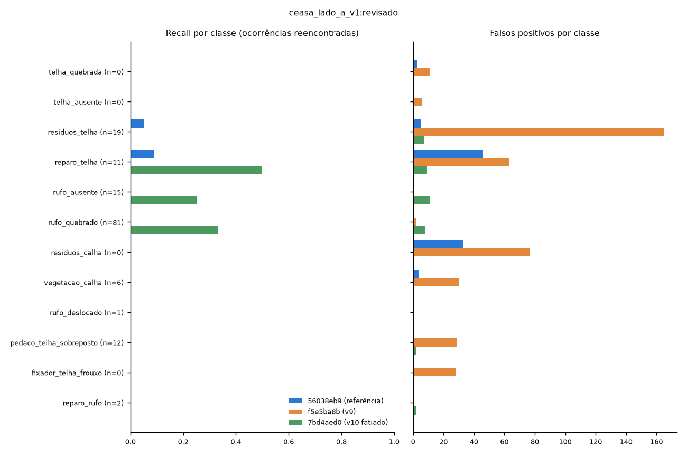

2026-10-07T13:51:03+00:00 · IoU 0.5 · confiança das sugestões 0.15 · fatiamento: {"enabled": true, "min_side": 2000, "patch": 1280, "overlap": 0.2, "full_image": true, "merge_iou": 0.5}
Métricas no mesmo pipeline das sugestões. Fotos vistas no treino de um modelo ficam fora da conta daquele modelo. Uma única edificação não mede generalização; nenhum modelo é aprovado por este relatório.
| Conjunto | Modelo | Fotos | Gabarito | Acertos | FP | Omissões | Precisão | Recall | mAP50 | s/foto |
|---|---|---|---|---|---|---|---|---|---|---|
| ceasa_v10_ladoA_parcial_s42:test | 56038eb9 (referência) | 9 | 33 | 2 | 4 | 31 | 0.333 | 0.061 | 0.160 | 0.22 |
| ceasa_v10_ladoA_parcial_s42:test | f5e5ba8b (v9) | 9 | 33 | 3 | 26 | 30 | 0.103 | 0.091 | 0.043 | 0.21 |
| ceasa_v10_ladoA_parcial_s42:test | 7bd4aed0 (v10 fatiado) | 9 | 33 | 7 | 23 | 26 | 0.233 | 0.212 | 0.147 | 1.12 |
| ceasa_v10_ladoA_parcial_s42:val | 56038eb9 (referência) | 7 | 40 | 3 | 7 | 37 | 0.300 | 0.075 | 0.067 | 1.19 |
| ceasa_v10_ladoA_parcial_s42:val | f5e5ba8b (v9) | 7 | 40 | 0 | 70 | 40 | 0.000 | 0.000 | 0.004 | 1.16 |
| ceasa_v10_ladoA_parcial_s42:val | 7bd4aed0 (v10 fatiado) | 7 | 40 | 8 | 41 | 32 | 0.163 | 0.200 | 0.100 | 0.56 |
| ceasa_lado_a_v1:revisado | 56038eb9 (referência) | 9 | 147 | 2 | 91 | 145 | 0.021 | 0.014 | 0.004 | 4.05 |
| ceasa_lado_a_v1:revisado | f5e5ba8b (v9) | 9 | 147 | 0 | 411 | 147 | 0.000 | 0.000 | 0.000 | 3.91 |
| ceasa_lado_a_v1:revisado | 7bd4aed0 (v10 fatiado) | 2 | 33 | 8 | 41 | 25 | 0.163 | 0.242 | 0.127 | 1.86 |





